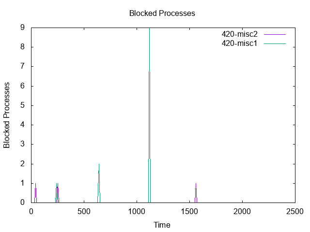
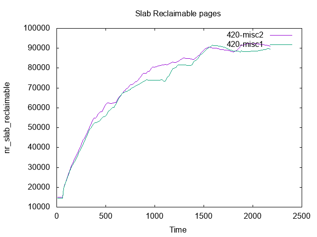

| 420 | 420 | ||||
|---|---|---|---|---|---|
| misc2 | misc1 | ||||
| Min | ReadScore | 274123.00 | ( 0.00%) | 278751.00 | ( 1.69%) |
| Min | WriteScore | 308.00 | ( 0.00%) | 315.00 | ( 2.27%) |
| Hmean | ReadScore | 330618.59 | ( 0.00%) | 328935.33 | ( -0.51%) |
| Hmean | WriteScore | 341.05 | ( 0.00%) | 349.04 | ( 2.34%) |
| Stddev | ReadScore | 98578.52 | ( 0.00%) | 104603.07 | ( -6.11%) |
| Stddev | WriteScore | 36.28 | ( 0.00%) | 33.83 | ( 6.76%) |
| CoeffVar | ReadScore | 28.33 | ( 0.00%) | 30.05 | ( -6.06%) |
| CoeffVar | WriteScore | 10.54 | ( 0.00%) | 9.62 | ( 8.76%) |
| Max | ReadScore | 558202.00 | ( 0.00%) | 570850.00 | ( 2.27%) |
| Max | WriteScore | 404.00 | ( 0.00%) | 409.00 | ( 1.24%) |
| BHmean-50 | ReadScore | 401763.09 | ( 0.00%) | 406496.24 | ( 1.18%) |
| BHmean-50 | WriteScore | 377.02 | ( 0.00%) | 379.73 | ( 0.72%) |
| BHmean-95 | ReadScore | 342379.07 | ( 0.00%) | 339110.51 | ( -0.95%) |
| BHmean-95 | WriteScore | 347.26 | ( 0.00%) | 355.44 | ( 2.36%) |
| BHmean-99 | ReadScore | 342379.07 | ( 0.00%) | 339110.51 | ( -0.95%) |
| BHmean-99 | WriteScore | 347.26 | ( 0.00%) | 355.44 | ( 2.36%) |
| 420 | 420 | ||||
|---|---|---|---|---|---|
| misc2 | misc1 | ||||
| User | 714.47 | 713.41 | |||
| System | 29361.69 | 29300.41 | |||
| Elapsed | 2156.04 | 2158.44 | |||
| 420 | 420 | ||||
|---|---|---|---|---|---|
| misc2 | misc1 | ||||
| Minor Faults | 1274615 | 1279918 | |||
| Major Faults | 2 | 47 | |||
| Swap Ins | 0 | 0 | |||
| Swap Outs | 0 | 0 | |||
| Allocation stalls | 0 | 0 | |||
| DMA allocs | 1176546 | 827250 | |||
| DMA32 allocs | 279308202 | 247045199 | |||
| Normal allocs | 349509434 | 367386531 | |||
| Movable allocs | 0 | 0 | |||
| Direct pages scanned | 35 | 42 | |||
| Kswapd pages scanned | 0 | 0 | |||
| Kswapd pages reclaimed | 0 | 0 | |||
| Direct pages reclaimed | 20 | 20 | |||
| Kswapd efficiency | 100% | 100% | |||
| Kswapd velocity | 0.000 | 0.000 | |||
| Direct efficiency | 57% | 47% | |||
| Direct velocity | 0.016 | 0.019 | |||
| Percentage direct scans | 100% | 100% | |||
| Zone normal velocity | 0.016 | 0.019 | |||
| Zone dma32 velocity | 0.000 | 0.000 | |||
| Zone dma velocity | 0.000 | 0.000 | |||
| Page writes by reclaim | 0.000 | 0.000 | |||
| Page writes file | 0 | 0 | |||
| Page writes anon | 0 | 0 | |||
| Page reclaim immediate | 0 | 0 | |||
| Sector Reads | 220 | 7000 | |||
| Sector Writes | 16620896 | 16552120 | |||
| Page rescued immediate | 0 | 0 | |||
| Slabs scanned | 16681 | 29642 | |||
| Direct inode steals | 10397 | 5504 | |||
| Kswapd inode steals | 0 | 0 | |||
| Kswapd skipped wait | 0 | 0 | |||
| THP fault alloc | 18 | 5 | |||
| THP fault fallback | 3 | 1 | |||
| THP collapse alloc | 0 | 157 | |||
| THP collapse fail | 1 | 1 | |||
| THP split | 0 | 0 | |||
| THP split failed | 0 | 0 | |||
| Compaction stalls | 1 | 1 | |||
| Compaction success | 0 | 0 | |||
| Compaction failures | 1 | 1 | |||
| Compaction pages moved | 0 | 0 | |||
| Compaction move failure | 0 | 0 | |||
| Compaction cost | 14 | 5 | |||
| NUMA alloc hit | 299385157 | 283537169 | |||
| NUMA alloc miss | 19236820 | 27681413 | |||
| NUMA interleave hit | 0 | 0 | |||
| NUMA alloc local | 299205096 | 283281139 | |||
| NUMA base PTE updates | 28519 | 52770 | |||
| NUMA huge PMD updates | 0 | 50 | |||
| NUMA page range updates | 28519 | 78370 | |||
| NUMA hint faults | 28472 | 27149 | |||
| NUMA hint local faults | 24689 | 23612 | |||
| NUMA hint local percent | 86 | 86 | |||
| NUMA pages migrated | 2314 | 2251 | |||
| AutoNUMA cost | 142 | 136 | |||
|  | ||
| | |
|  | ||
| ||